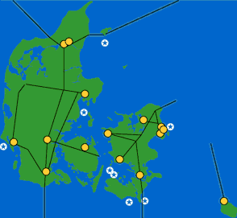

Grid Connection
of Offshore Wind Parks
 The
Grid
The
Grid
The picture to the right shows the Danish electrical transmission grid.
Major power stations are shown in yellow.
 Total generating capacity was some 10,000 MW in 1998.
Total generating capacity was some 10,000 MW in 1998.
 Present and future offshore wind parks with a total of some 4,100 MW
are shown in white and blue.
Present and future offshore wind parks with a total of some 4,100 MW
are shown in white and blue.
 The western and eastern part of the country are not directly connected,
but are connected to the German and Swedish electrical transmission systems
using AC (alternating currency transmission lines). The rest of the connections
to Sweden, Norway, and Germany are DC (direct current) connections.
The western and eastern part of the country are not directly connected,
but are connected to the German and Swedish electrical transmission systems
using AC (alternating currency transmission lines). The rest of the connections
to Sweden, Norway, and Germany are DC (direct current) connections.
Grid connection of offshore wind parks is not a major technical problem
per se, in the sense that the technologies which are involved are
well known. Optimising these technologies for remote offshore sites will
be important, however, to ensure reasonable economics.
 The first commercial-sized offshore wind farms in Denmark will be located
some 15-40 km (10-25 miles) from shore, at water depths from 5 to 10, possibly
15 metres. The park sizes will range from 120 to 150 MW. The first parks
(year 2002) will be built using the present 1.5 MW generation of wind turbines,
which by then will have been through an onshore operational period of some
five years.
The first commercial-sized offshore wind farms in Denmark will be located
some 15-40 km (10-25 miles) from shore, at water depths from 5 to 10, possibly
15 metres. The park sizes will range from 120 to 150 MW. The first parks
(year 2002) will be built using the present 1.5 MW generation of wind turbines,
which by then will have been through an onshore operational period of some
five years.
Cabling
Undersea cabling connecting offshore parks to the main electrical grid is
a well known technology. Undersea cables will have to be buried in order
to reduce the risk of damage due to fishing equipment, anchors, etc. If
bottom conditions permit, it will be most economic to wash cables into the
seabed (using high pressure water jets) rather than digging or ploughing
cables into the bottom of the sea.
Voltages
Inside the large 120-150 MW wind parks being planned in Denmark, it is likely
that 30-33 kV connections will be used. In the middle of each park there
will probably be a platform with a 30 to 150 kV transformer station, plus
possibly a number of service facilities.
 Connection to the mainland will be done using 150 kV connections.
Connection to the mainland will be done using 150 kV connections.
Reactive
Power, HVDC
The undersea cables will have a high electrical capacitance, which may be
useful to supply reactive power to the parks. It may be optimal to have
some form of variable reactive power compensation built into the system,
depending on the precise grid configuration. If the distance to the main
grid is considerable, an interesting alternative could be to connect the
parks to the mainland using high voltage direct current connections (HVDC).
Remote
Surveillance
Remote surveillance of the parks will obviously be even more important than
on land. Radio links for this purpose have already been in operation at
the Tunoe Knob and Vindeby offshore wind parks for some years.
 With the the large 1.5 MW units foreseen for these parks, it may be
economic to install e.g. extra sensors on each piece of equipment, (and continuously
analyse its minute vibrations which tend to change their pattern as the
part is worn down). This technology which is well known in certain parts
of industry to ensure optimum maintenance of machinery.
With the the large 1.5 MW units foreseen for these parks, it may be
economic to install e.g. extra sensors on each piece of equipment, (and continuously
analyse its minute vibrations which tend to change their pattern as the
part is worn down). This technology which is well known in certain parts
of industry to ensure optimum maintenance of machinery.
Preventive
Maintenance
Since weather conditions may prevent service personnel from approaching
the wind turbines at times of bad weather, it is extremely important to
ensure a high availability rate of offshore wind turbines. Preventive maintenance
check programmes may need to be optimised for remote offshore locations.

|
Back | Home | Forward |
© Copyright 1998 Soren Krohn. All rights reserved.
Updated 6 August 2000
http://www.windpower.org/tour/grid/offshore.htm